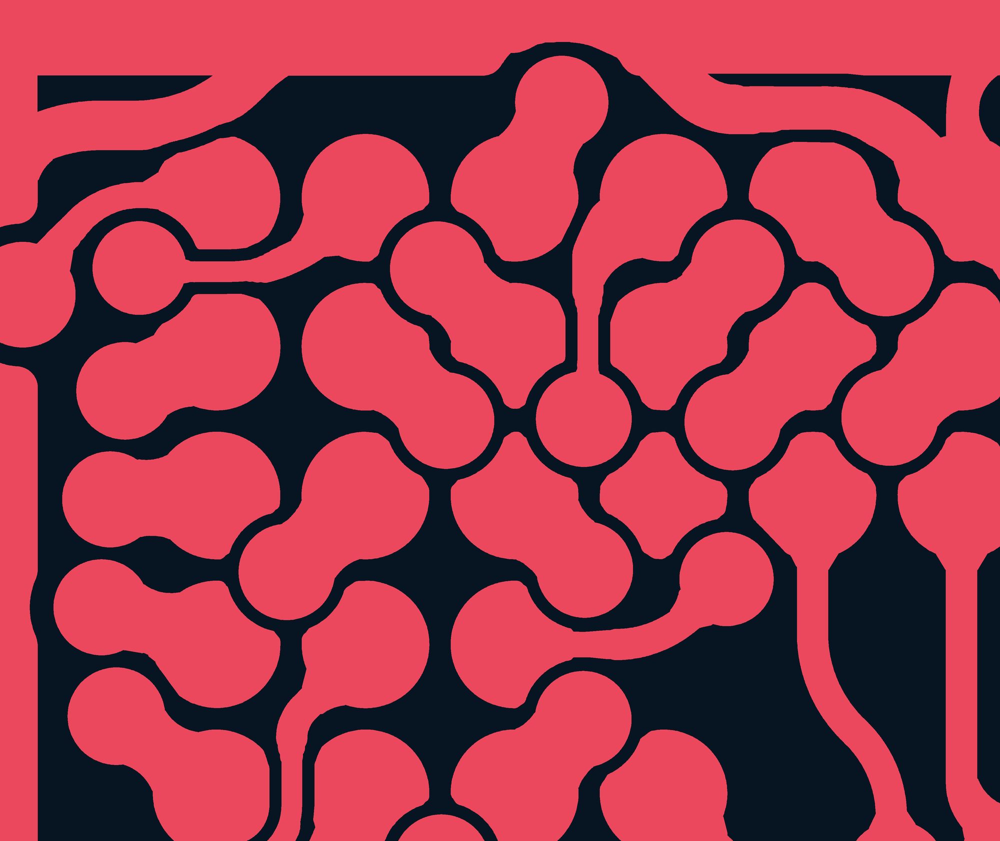
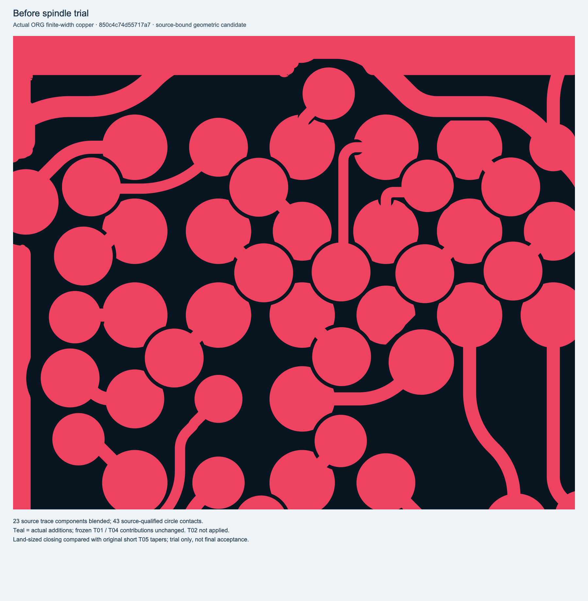
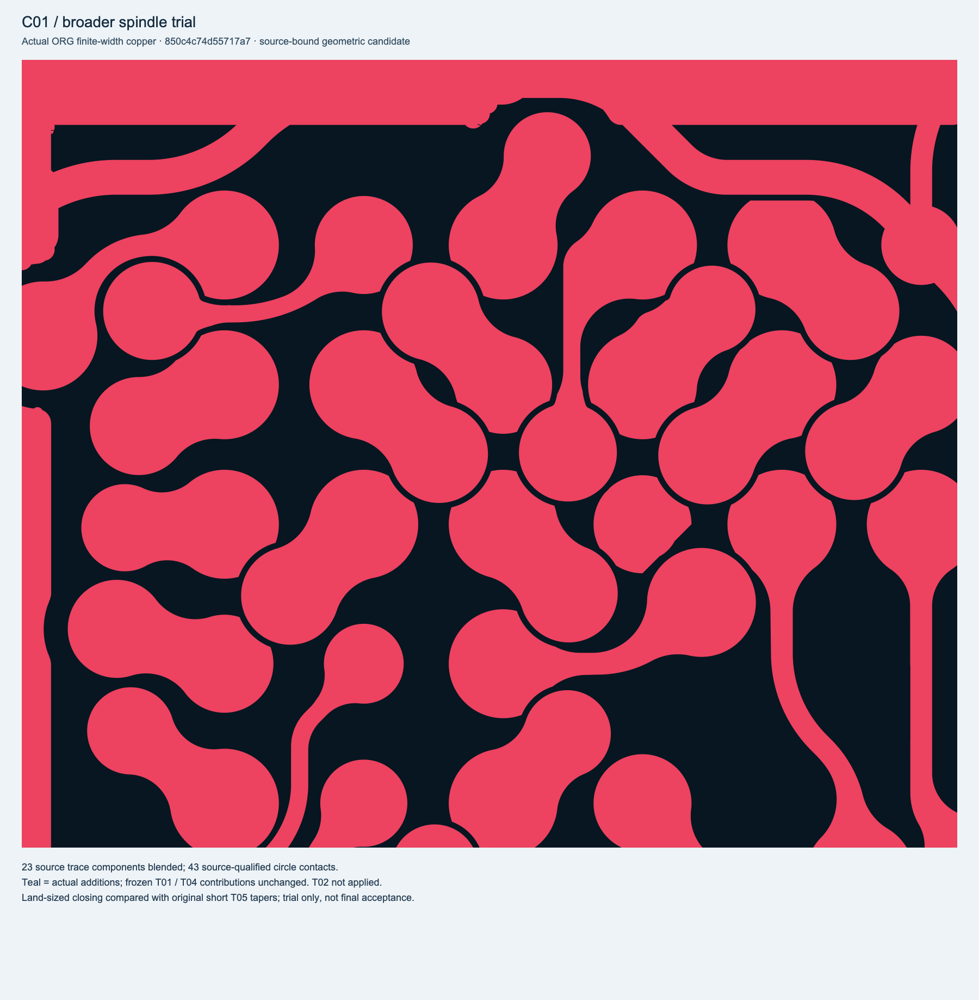
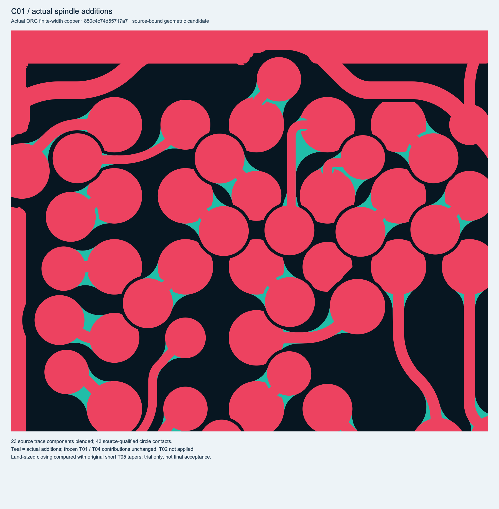

Experimental wider junction treatment. First T05 result preserved. Frozen T01/T04 source parts unchanged. Branched/mixed components remain unhandled.




Result and scope · Every component outcome · Final simultaneous clearance checks